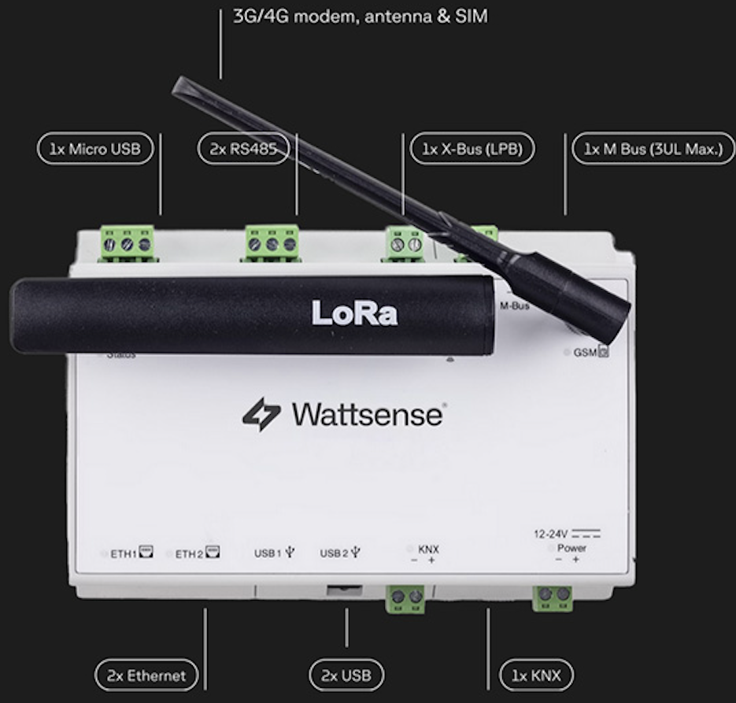

Wattsense
Wattsense is a universal gateway that connects building equipment to IoT and BMS protocols. MICA's air quality data is easily integrated through it to monitor and act in real time.

Over LoRaWAN, it's the MICA itself that sends the space's air quality data, both the raw parameters and the calculated indices, and certain of its settings can be reconfigured remotely from the Wattsense interface. What sets this integration apart is that Wattsense unifies the installation's different protocols (BACnet IP, Modbus TCP, MQTT) into a single point, centralizing and making the entire building ecosystem compatible from one place.
Wattsense
Wattsense is a French company that offers an IoT gateway/platform (Wattsense Bridge) to connect a building's equipment and sensors, regardless of their age or protocol, to building management systems (BMS) via BACnet IP, Modbus TCP, or MQTT. It targets integrators, distributors, and building managers who need to modernize connectivity in existing buildings.